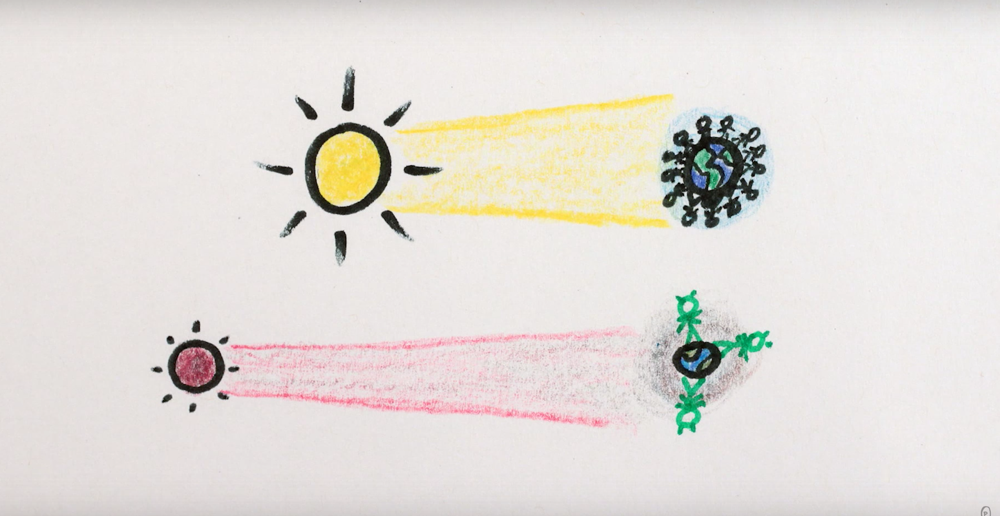
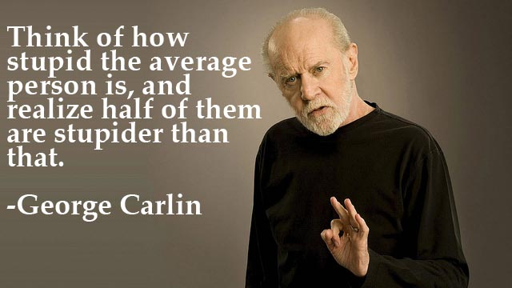
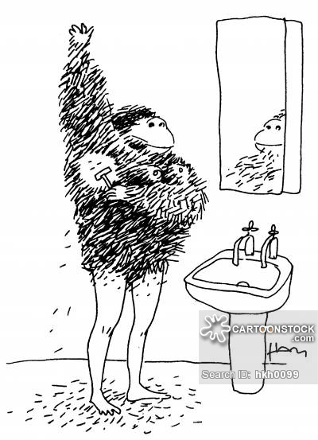
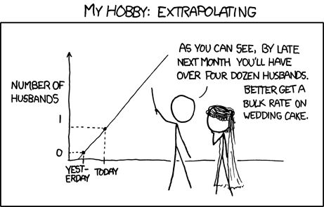
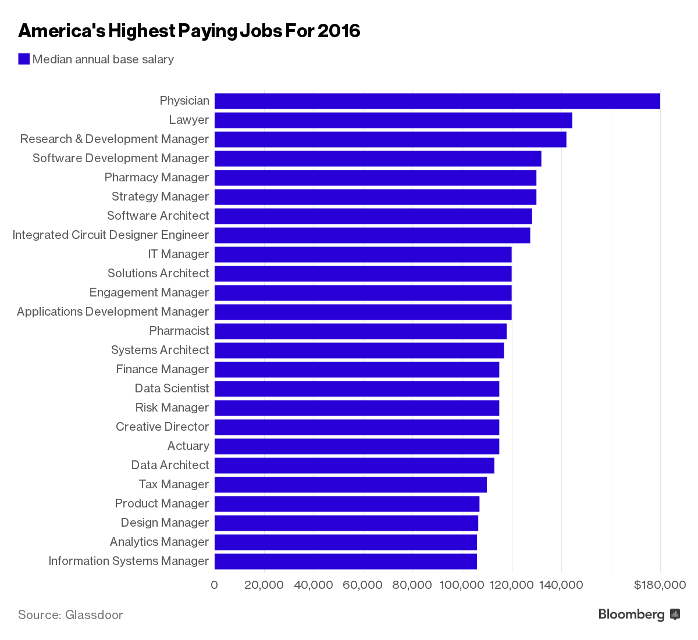
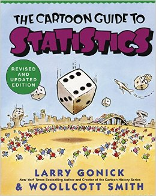
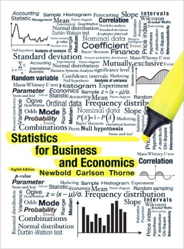
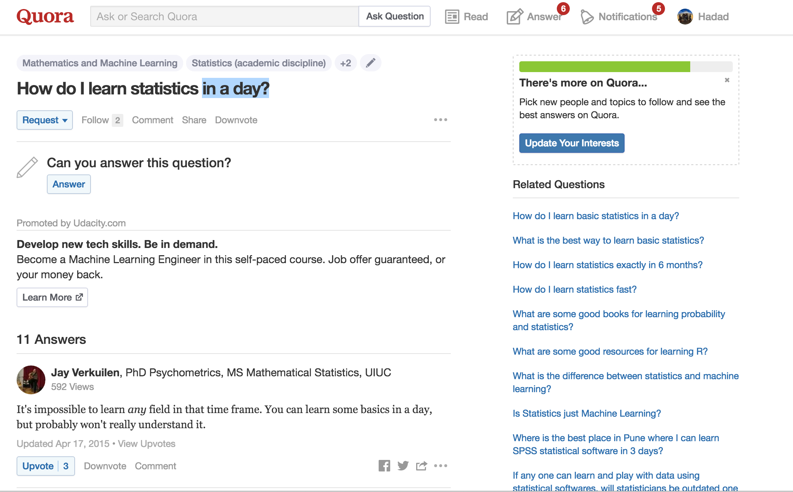

class: center, middle, theBlackBackground # Statistics --- class: center, middle # What will you learn in this course? --- class: center, middle # Should you enter a bet? <img src="gambling.jpg", width = 600> .center[The usual stuff. <br> (**Naive probability and counting**)] --- class: center, middle # Will the Earth convert into a mini black-hole? .center[Look, <font color="navy">most probably</font> not. <br> (**Naive probability and counting**)] --- class: center, middle # Where should you look for aliens?  .center[The answer might be: in planets that are <font color="navy">smaller</font> than Earth, <font color="navy">farther</font> from their sun, with <font color="navy">thinner</font> atmosphere. The intelligent forms there would be creatures the <font color="navy">size of polar bears</font> living in <font color="navy">small communities</font>. <br> (**Bayes' Theorem**)] --- class: center, middle # <b>How stupid is the *average* person?</b>  .center[Actually, that's slightly wrong! <br> (**Measures of centrality**)] --- class: center, middle # <b>Does Shaving Make Hair Grow Back Thicker?</b>  .center[Alternatively: Does gymnastics stunt growth? <br> (**Correlations (vs. Causation)**)] --- class: center, middle # How many husbands by next month?  .center["By the third trimester, there will be hundreds of babies inside you" https://xkcd.com/605/<br> (**Conditional expectation and regression**)] --- class: center, middle # How can robots think? .center[*"It made me question human creativity. When I saw AlphaGo’s moves, I wondered whether the Go moves I have known were the right ones" - Lee Se-dol* <br> (**Inference**)] See also: https://www.youtube.com/watch?v=V1eYniJ0Rnk&list=PLujxSBD-JXglGL3ERdDOhthD3jTlfudC2 --- class: center, middle # There's also a good financial reason...  --- class: center, middle # Programming <img src="python-logo.png"> .center[We will be using the *Python* programming language.] --- class: center, middle, theBlackBackground # Logistics --- class: center, middle # Required Textbook  .center[Gonick, L., & Smith, W. (1993). The cartoon guide to statistics. <br> We will complement the explanations with homework exercises.] --- class: center, middle # Optional Textbook  .center[Newbold, Carlson, Thorne (2012). *Statistics for Business and Economics (8th Edition)*, Pearson Publishing] Students who would like to do extra reading are <font color = "red">**strongly**</font> recommended to check out relevant chapters and exercises in this textbook. --- class: center, middle # Grades Weekly Homeworks: 30% Midterm: 20% Final exam: 30% Discussion sections: 20%[*] [*] These are the "STATA labs" ECON1150 --- class: center, middle # Homework rules You may work in groups of *no more than three students*. Each students submits their individual work, with all collaborators' names. No two groups should have identical answers. -- <br><br><br> Violation of these rules will be considered a **violation of academic integrity** --- class: center, middle # Course website https://piazza.com/bc/fall2016/econ1151/home .center[Please try to post your questions to the forum] # Office hours Wed 1-3PM (?), Maloney 3F, 340C --- class: center, middle, theBlackBackground # The Fundamental rule of ECON1151... --- class: center, middle # Don't be this guy. 